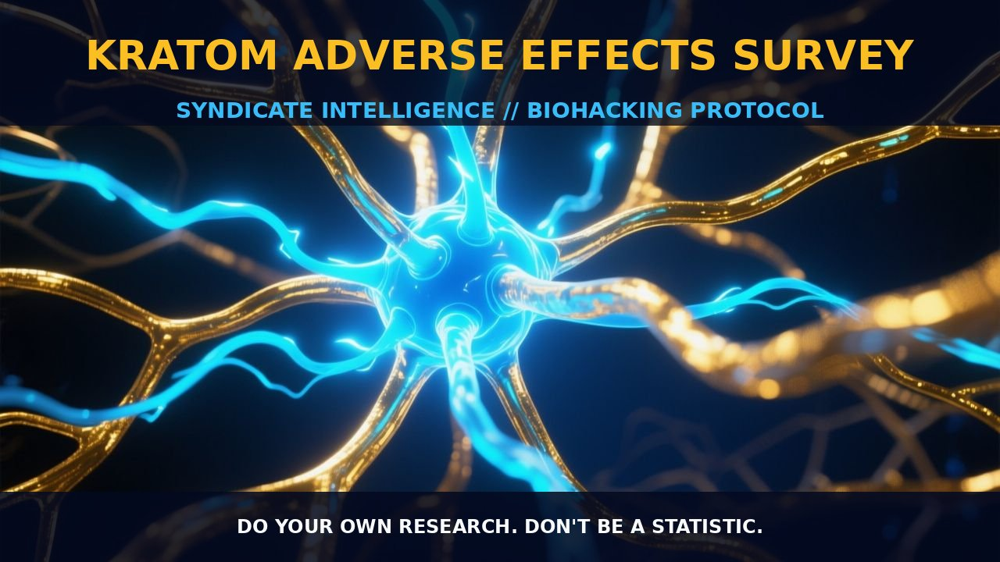

Adverse Effects of Kratom: A Comprehensive Analysis

1. The Mechanism
Kratom, derived from the leaves of the Mitragyna speciosa tree, is a complex mixture of alkaloids, with mitragynine and 7-hydroxymitragynine being the primary psychoactive components. These alkaloids interact with multiple receptor systems, predominantly opioid receptors, but also adrenergic and serotonin receptors. The pharmacological action of kratom involves a complex interplay of these receptor interactions, leading to both analgesic and stimulant effects.
However, this interaction also gives rise to a range of adverse effects, including gastrointestinal issues, cardiovascular disturbances, and neurological symptoms. The mechanism of these adverse effects is largely attributed to the modulation of neurotransmitter activity and receptor sensitization, which can lead to disruptions in homeostatic balance within the body.
The adverse effects observed in kratom users are multifaceted, with nausea being the most commonly reported symptom, occurring in nearly half of all users. This nausea is likely due to the activation of opioid receptors, which can trigger the release of serotonin and other neurotransmitters that affect gut motility. Additionally, the activation of adrenergic receptors can lead to increased heart rate and blood pressure, contributing to heart-related issues such as palpitations and, in severe cases, cardiac arrest. The involvement of serotonin receptors also contributes to mood changes and potential irritability or agitation.
2. Biological Leverage
The biological leverage of kratom's adverse effects is rooted in its pharmacological actions on the central nervous system and gastrointestinal tract. The modulation of opioid receptors leads to a cascade of neurotransmitter release, including serotonin, which can affect gut motility and lead to nausea and stomach discomfort. The activation of adrenergic receptors increases sympathetic nervous system activity, which can cause elevated heart rate and blood pressure, contributing to heart-related issues.
Furthermore, the interaction with serotonin receptors can lead to mood changes and irritability. Kratom's effects on the liver are also significant, with liver damage being a reported adverse effect. This is likely due to the hepatotoxicity of certain alkaloids found in kratom, which can cause oxidative stress and damage to liver cells. The liver is a critical organ for detoxifying foreign substances, and the high variability of alkaloids in kratom can put a strain on this process, leading to hepatotoxicity.
The gastrointestinal issues associated with kratom, such as upset stomach and constipation, are linked to the activation of opioid receptors in the gut. Opioids can slow gut motility, leading to constipation, and can also cause nausea through their effects on the gut. These adverse effects highlight the importance of understanding the dose-dependent nature of kratom's effects and the need for careful dosing to minimize these side effects.
3. Protocol Implementation
When implementing kratom as a supplement, it is crucial to pay attention to the dosing and timing of consumption to minimize adverse effects. Low-to-moderate amounts of kratom, typically in the range of 2-5 grams, are generally well-tolerated and may provide therapeutic benefits such as pain relief and mood enhancement. However, higher doses can increase the risk of adverse effects, including nausea, stomach discomfort, and heart-related issues. Therefore, it is recommended to start with low doses and gradually increase to find the optimal dose for individual tolerance.
Timing of consumption is also important, as consuming kratom on an empty stomach can increase the likelihood of nausea and stomach issues. Taking kratom with food or a small amount of fat can help mitigate these effects. Additionally, avoiding the combination of kratom with other substances, particularly alcohol and other opioids, can reduce the risk of adverse outcomes.
Stacking kratom with other supplements, such as magnesium for muscle relaxation or ginger for digestive support, can also help manage the adverse effects. However, it is important to be mindful of potential interactions and to monitor how the body responds to these combinations.
Prostar Life Hack
Start with low doses of kratom (2-5 grams) and gradually increase to find your optimal dose. Take kratom with food or a small amount of fat to mitigate nausea and stomach issues. Consider stacking kratom with magnesium for muscle relaxation and ginger for digestive support.
[ AUTHOR: LEAD TECHNICAL RESEARCHER ]